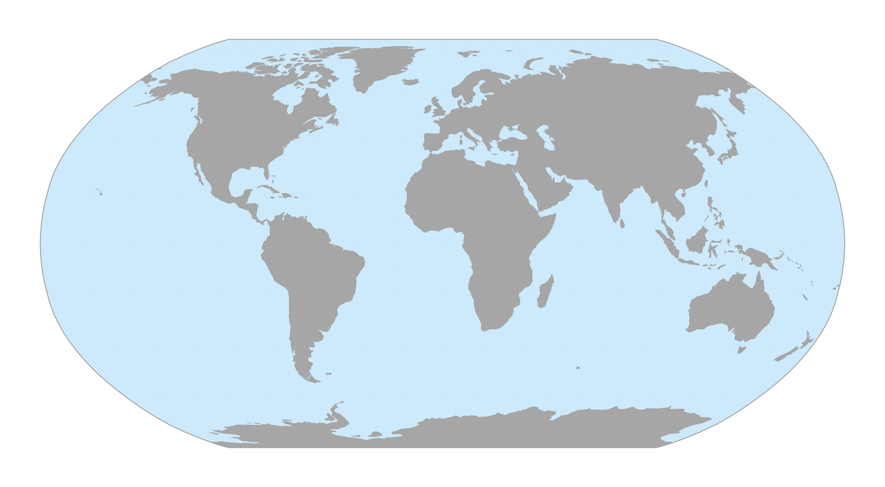
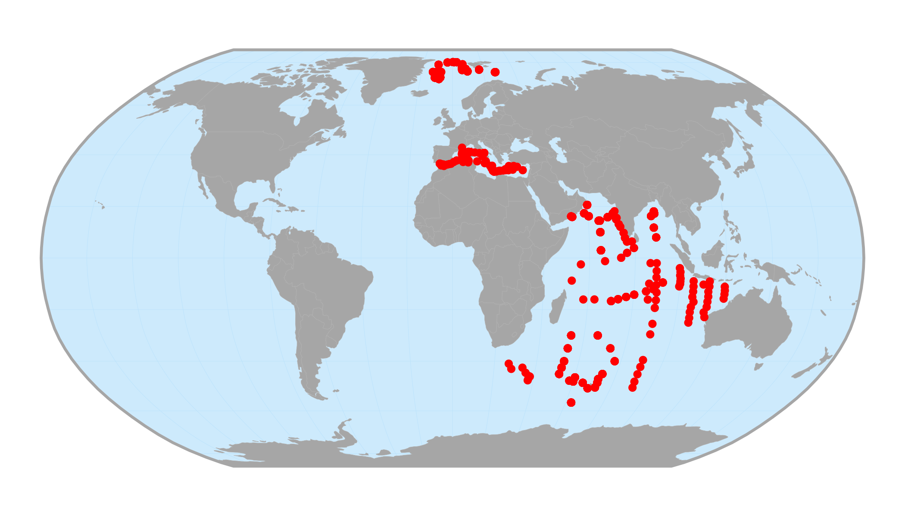
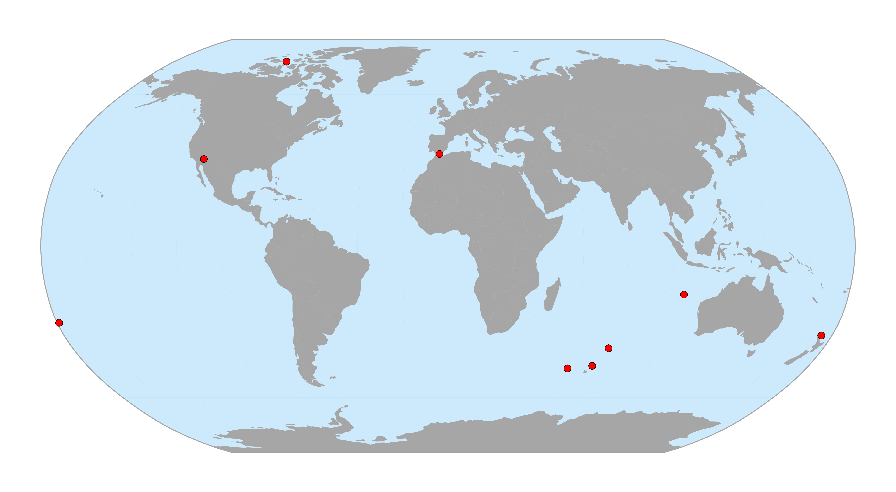
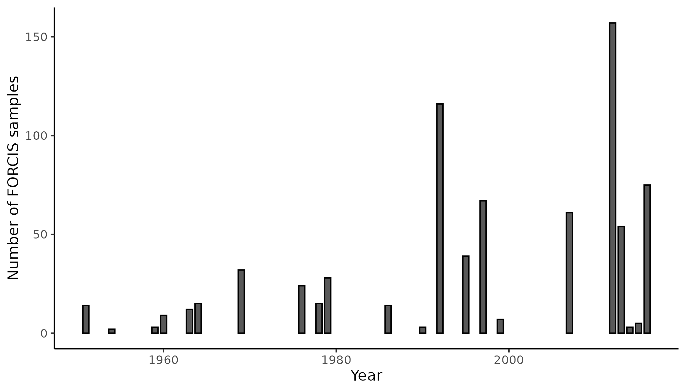
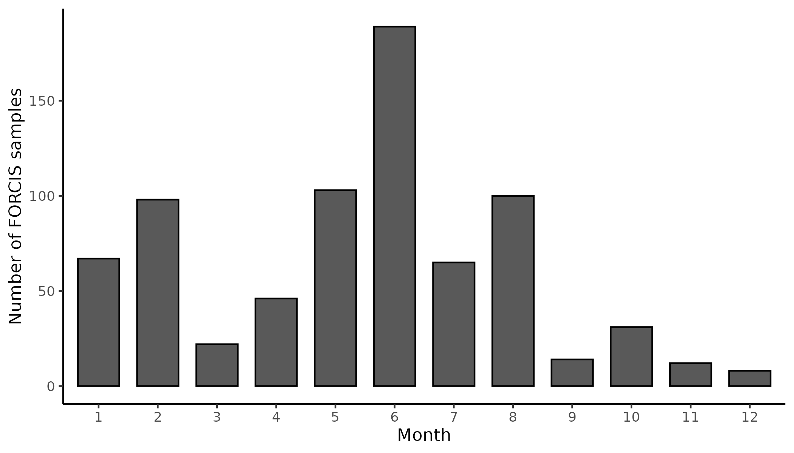
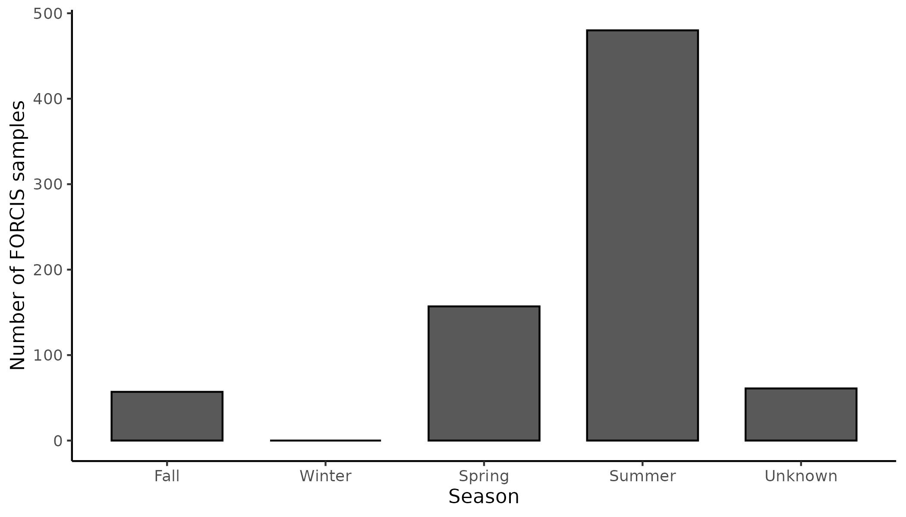
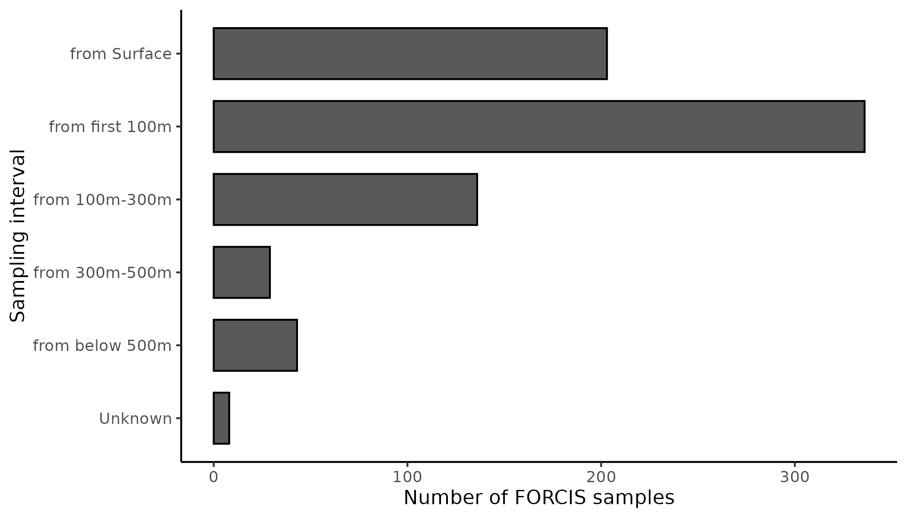

The package forcis provides numerous
functions to visualize FORCIS data. This vignette shows how to use
and customize these functions.
Setup
First, let’s import the required packages.
Before proceeding, let’s download the latest version of the FORCIS database.
# Create a data/ folder ----
dir.create("data")
# Download latest version of the database ----
download_forcis_db(path = "data", version = NULL)The vignette will use the plankton net data of the FORCIS database. Let’s import the latest release of the data.
# Import net data ----
net_data <- read_plankton_nets_data(path = "data")NB: In this vignette, we use a subset of the plankton net data, not the whole dataset.
Spatial visualization
Creating a world map
The function geom_basemap() can be used to easily add
World countries, oceans and bounding box to a ggplot2
object.
# World basemap ----
ggplot() +
geom_basemap()
These layers come from the Natural Earth website and are defined in the Robinson projection.
Mapping FORCIS data
The function ggmap_data() can be used to plot FORCIS
data on a World map. Let’s map the plankton nets data.
# Map raw net data ----
ggmap_data(net_data)
User can customize the aesthetic of the data:
# Customize map ----
ggmap_data(net_data, col = "#ff0000", fill = NA, shape = 21, size = 3)
This function works with the output of various functions available in
the forcis package. For example:
# Filter net data ----
indian_net_data <- filter_by_ocean(net_data, ocean = "Indian Ocean")
# Map filtered data ----
ggmap_data(indian_net_data)Note that the forcis package is pipe-friendly.
# Same as before, but w/ the pipe ----
net_data %>%
filter_by_ocean(ocean = "Indian Ocean") %>%
ggmap_data()You can export this map with the function ggsave() of
the package ggplot2.
# Map filtered data ----
indian_net_data_map <- net_data %>%
filter_by_ocean(ocean = "Indian Ocean") %>%
ggmap_data() +
ggtitle("FORCIS net data - Indian Ocean")
# Save as PNG ----
ggsave(indian_net_data_map,
filename = "indian_net_data_map.png",
width = 20,
height = 11,
units = "cm",
dpi = 300,
scale = 1.5,
bg = "white")Temporal visualization
Plot data by year of sampling
The function plot_record_by_year() plots the number of
records (y-axis) by year (x-axis).
# Plot number of records by year ----
plot_record_by_year(net_data)
Plot data by month of sampling
The function plot_record_by_month() plots the number of
records (y-axis) by month (x-axis).
# Plot number of records by month ----
plot_record_by_month(net_data)
Plot data by season
The function plot_record_by_season() plots the number of
records (y-axis) by season (x-axis).
# Plot number of records by season ----
plot_record_by_season(net_data)
Vertical visualization
Plot data by depth of sampling
The function plot_record_by_depth() plots the number of
records (x-axis) by depth intervals (y-axis).
# Plot number of records by depth ----
plot_record_by_depth(net_data)